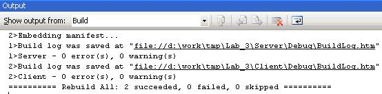

| Лабор. работа №1 |
| Лабор. работа №2 |
| Лабор. работа №3 |
| Лабор. работа №4 |
| Документация |
| Архив |
| Вопросы |
Использование библиотеки MFC для работы с сокетами.
| Цель работы |
Обеспечить передачу сообщений от клиента серверу по протоколам UDP и TCP/IP. При этом предусмотреть возможность закрытия данных (шифрования) при передачи их по сети между программами клиента и сервера. При этом необходимо использовать для работы с сокетами библиотеку классов MFC.
| Задание |
Разработать программу клиента, которая должна:
- запрашивать у пользователя адрес программы-сервера;
- устанавливать соединение с сервером;
- зашифровывать и расшифровывать данные;
- передавать на сервер данные;
- принимать ответ от сервера и выводить его на экран;
- закрывать соединение с сервером.
Разработать программу сервера, которая должна:
- ожидать запросов от программ клиентов на соединение;
- устанавливать соединение с клиентами;
- зашифровывать и расшифровывать данные;
- принимать данные от клиентов и выполнять их обработку;
- пересылать результат обработки клиенту.
| Основные сведения |
В библиотеке MFC для работы с сокетами существуют два специальных класса: CAsyncSocket и CSocket, причем второй унаследован от первого.
CAsyncSocket содержит основные функции для работы с сокетами, однако он не поддерживает блокирующие функции. Для работы с блокирующими функциями используется класс CSocket.
Перед началом работы необходимо подключить DLL WinSock с помощью функции WSAStartup(). Если при создании проекта был установлен флажок для использования Windows Sockets, то инициализация и подключение DLL производятся автоматически.
Для работы необходимо либо создать производный класс от CSocket и использовать объекты этого класса, либо использовать объекты класса CSocket. В первом случае возможно отслеживание возникающих событий с использованием асинхронных функций.
Создание сокета может производиться с помощью функций - членов класса Create и Socket.
Функция Create используется для создания TCP сокетов. Прототип функции:
BOOL Create( UINT nSocketPort = 0,
int nSocketType = SOCK_STREAM,
LPCTSTR lpszSocketAddress = NULL )
Для создания серверного сокета нужно указать порт, для создания клиентского сокета можно вызвать функцию без параметров.
Функция возвращает TRUE в случае успеха, иначе - FALSE. Код ошибки получается с помощью функции GetLastError().
При создании сокета с помощью функции Create вызывать функцию Bind не требуется.
Более универсальный способ, позволяющий создавать сокеты для любого протокола - с помощью функции - члена класса Socket. Прототип этой функции:
BOOL Socket(int nSocketType,
long lEvent,
int nProtocolType,
int nAddressFormat)
Здесь nSocketType - тип сокета (SOCK_STREAM, SOCK_DGRAM...);
lEvent - отслеживаемые события. Должно быть равно (FD_READ | FD_WRITE | FD_OOB | FD_ACCEPT | FD_CONNECT | FD_CLOSE)
nProtocolType - используемый протокол
nAddressFormat - семейство адресов
Функция возвращает TRUE в случае успеха, иначе - FALSE. Код ошибки получается с помощью функции GetLastError().
После вызова функции Socket требуется вызвать функцию - член класса Bind().
Основные члены класса имеют имена, схожие с именами обычных функций для работы с сокетами, они также имеют сходные прототипы. Отличие в том, что не используется первый параметр - идентификатор сокета. Ниже перечислены такие функции:
Bind
Listen
Accept
GetPeerName
Connect
Send
Receive
SentTo
ReceiveFrom
Функция Connect имеет кроме того еще одно представление, используемое для TCP сокетов:
BOOL Connect( LPCTSTR lpszHostAddress, UINT nHostPort )
Здесь lpszHostAddress - строка представляющая Интернет адрес. Допустимые адреса могут быть, например, такими: "123.45.67.89", "www.microsoft.com".
nHostPort - номер порта TCP. Аналогичные представления имеют функции SendTo, ReceiveFrom, хотя эти функции не рекомендуется использовать при работе по TCP.
Закрытие сокета производится автоматически при удалении объекта.
Пример №1: создание серверного сокета для TCP
Пример №2: создание клиентского сокета для TCP
Пример №3: создание IPX сокета
Пример №4: прием данных от клиента по протоколу SPX
Пример №5: передача данных на сервер по протоколу SPX
| Порядок выполнения лабораторной работы |
1. Запустить Microsoft Visual Studio 2005.
2. Выбрать в главном меню File->Open->Project/Solution.
3. Указать путь к файлу lab_3.sln и далее нажать кнопку Open.
4. Слева в окне выбрать вкладку Solution Explorer. Все файлы проекта будут представлены в этом окне. Двойное нажатие левой кнопкой мыши на файле откроет его для редактирования в основной области экрана.

Рисунок 1. Окно Solution Explorer
5.Нажать кнопку F7. Проект будет откомпилирован целиком. Внизу в окне Output будет представлен отчет.

Рисунок 2. Окно Output
Обратите внимание на последнюю строчку в проекте, в ней приведены результаты компиляции:
========== Build: 2 succeeded, 0 failed, 0 up-to-date, 0 skipped ==========
6. В папке Debug (или Release) будут созданы исполняемые файлы программ: server.exe – программа-сервер, client.exe – программа-клиент.
| Описание работы программ |
Программа-сервер
Перед запуском сервера (кнопка Start) необходимо выбрать протокол обмена данными в сети (TCP, UDP), и, если необходимо, включить симметричное шифрование (галка Protected) с указанием ключа. Аналогичный ключ должен быть указан на стороне клиента. После того, как настройки будут установлены, можно запустить сервер. Далее программа переходит в режим ожидания подключений от клиента (если выбран протокол TCP) или в режим приёма сообщений от клиента (если протокол - UDP). В окне Log выводится информация о текущих событиях, а также сообщения от клиента. Остановка работы сервера производится нажатием кнопки Stop.

Рисунок 3. Работа сервера
Программа-клиент
После запуска программы необходимо выбрать протокол для работы в сети (UDP/TCP) и ввести IP-адрес сервера.
При работе по протоколу UDP адрес сервера должен быть 127.0.0.2. Для изменения IP адреса сервера и клиента необходимо перекомпилировать приложения с новыми значениями IP. При работе по протоколу TCP таких ограничений не накладывается.
Шифрование проходит аналогично закрытию данных на сервере.
При нажатии кнопки “Connect(TCP)” при выбранном TCP протоколе создается сокет и устанавливается соединение с сервером, а при UDP – только создается сокет. В поле “Message” пользователь набирает сообщение и по нажатию кнопки “Send” осуществляется отправка с последующим разрывом соединения.

Рисунок 4. Работа клиента